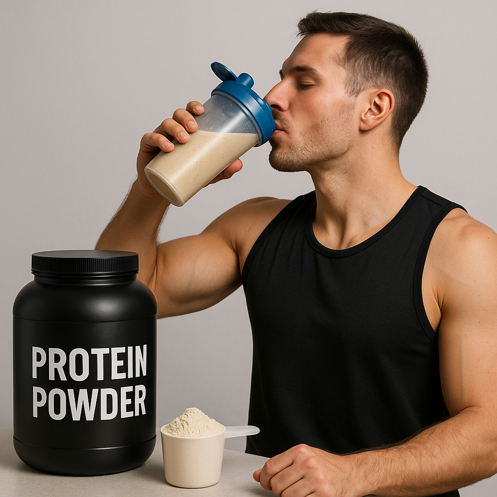
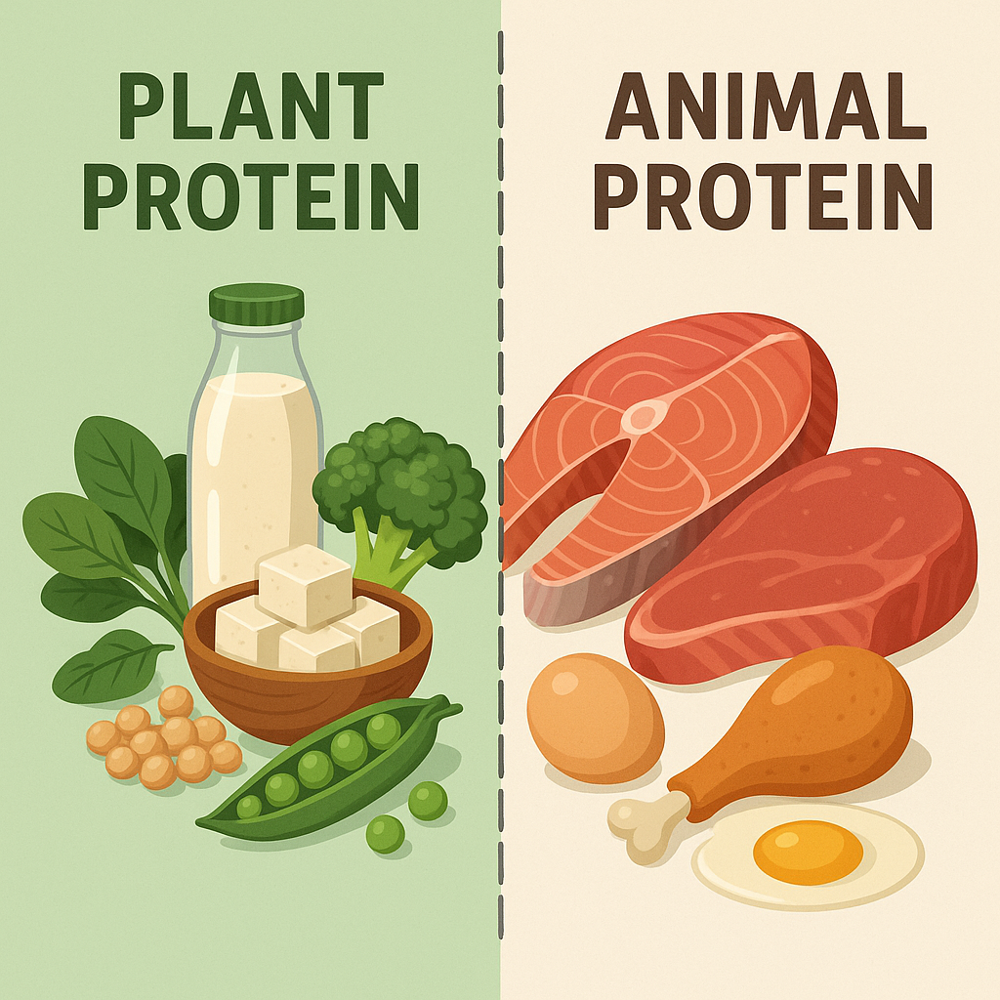
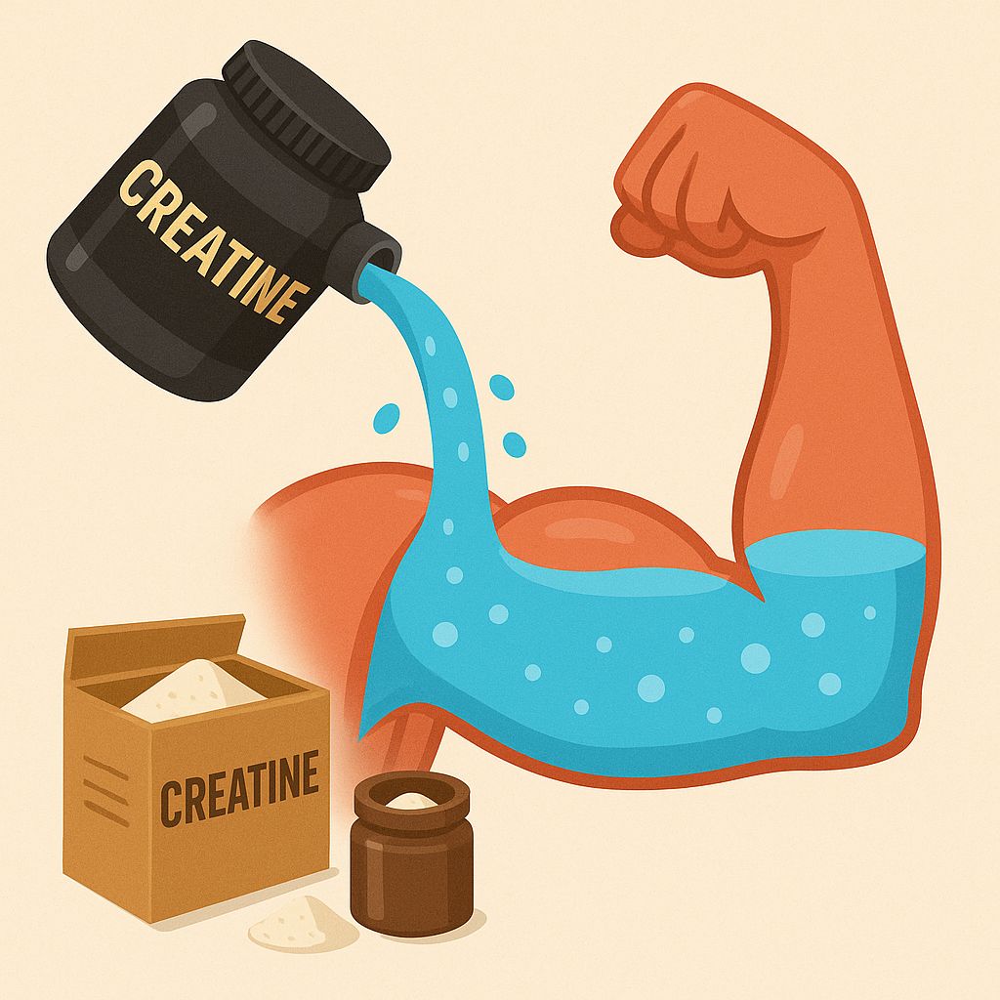

When people usually start going to the gym for muscle growth purpose, the first thing they would buy is probably a tub of protein powder. no doubt they are helpful, but it is not necessary. Protein powder and other supplement such as creatine and amino acid are just there to supplement your diet. Therefore if you haven't please go check out my diet page first. If you have already, I will introduce various supplements and their benefits below.
Most of you have probably heard about protein powder and it's correlation with the gym. There are a lot of myths regarding them, which I will debunk below. Again, I am not a dietitian if you have more doubts feel free to do some research on your own. I have already, so kinda just "believe me bro" on this one.
Protein powders comes in varieties, most common ones are whey protein which are made from milk, some individuals are lactose intolorant therefore plant base protein such as pea, soy, heap rice etc, comes in play. Of course, there are some more "advanced" protein powder such as protein isolate and hydrolyzed proteins. The difference between them are just how they are filtered. Whey concentrate are the least filtered, isolate is more refined and hydrolyzed is the most filtered. If you are not lactose intolorant then whey concentrate will do the job just fine. However,if you are lactose intolorant then base on your severity pick the more filtered whey protein or switch to a plant base protein. All whey protein provide the same thing; protein, and protein are all equal to each other so no need to spend the extra cash unless you have to. The more refined the protein the less calorie from fat there will be, but there isn't any dramatic caloric differences between them.
Unfortunately proteins from different sources are not exactly the same. Animal proteins; protein that come from an animal source: milk(like whey), meat, fish, egg, etc, are all complete protein. They are proteins that can be used directly for muscle protein synthesis. Basically, if you eat animal protein, the rest are irrelavent, your body will make it to use ASAP. Plant proteins on the other hand are often called incomplete proteins, they often lack one or more amino acids. However, you can take different source of plant protein and formulate them into complete protein, often this is done by pairing different food like rice and beans, whole grain and peaunuts etc. Some plants have complete protein by themselves, such as soy, quinoa and buckwheats. Unless you are a vegan or extremely lacto, I would recommend animal proteins in general.
Lowkey the biggest bullshit I have ever heard. As mentioned above, protein powders are literally just milk. If you believe milk is going to destroy your kidney then you got more to worry(your brain). Will you die or ruin your kidneys by taking protein powder? Of course! If you take 30 scoops a day then you will cause kidney failure, not because the protein powder per se, but due to excessive protein in take. Anything excessive will lead to damage.
If you do simple math on the cost per protein from protein powder to meat in general most of the time protein powder would be the cheaper option
Protein powders are just protein supplement, not steriods, if you get proteins from other sources you will grow. As long as you get enough protein everyday there is no need to take protein powder. Personally throughout my cut I have barely drink protein powder since my protein intake was enough from my diet
Get your brain checked
Creatine is probably what most beginners hesitate to take, since they are not like protein which are easily found within food source. Creatines are also from food such as beef and watermelon, but you will have to eat a tremendous amount to get 5 grams of creatine which is what you need to take to reap the benefits, keep in mind its 5g daily. Basically creatine stores water within your muscle tissue, it can also help with muscle recovery, endurance and help its growth a bit. Many studies have proven that creatine works and there are almost no side effects, some individual claim it cause balding but no study has proven that. Creatine does cause you to bloat a little but after a few weeks you should be fine. Again, test it out and see. Keep in mind that there is a small portion of the population that does not react to creatine at all, if you are one of them just save some money and don't bother with it, but you do have to try first to see.
Different from protein powder, creatine requires you to take it daily even on rest days. AKA 365 days a year basically, of course missing a few days won't set you back to the beginning.
Typically you would need to take 5 grams of creatine every day for a month, or you can take 30 grams a day for a week then 5 grams from there. This is call the loading phase, as your body need to stack up creatine before the benefits kick in, the difference between the two methods is just the loading time, one takes a month and another takes a week. In the end you will get the same result
"Unless you are taking steriods, in that case you will gain muscle even sitting at home"